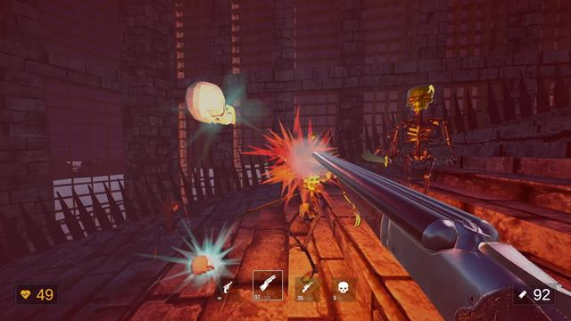

In game development since 2021 — gameplay programming and systems architecture fused with technical art: custom shaders, VFX and rendering optimization in URP & HDRP.
Unity Developer & Technical Artist — in game development since 2021.
Browser platformer with tower-defence elements: stay on the platform and keep the generator alive. Built by a team of four in 72 hours for Indie Varvar's Jam #5 (Sep 2023).
A single WindCore.hlsl include drives grass, flowers and every wind-swayed object — layered value-noise / FBM for the breeze, a travelling gust wave for punchy bursts, and a per-vertex bend that sags instead of stretching. Depends only on _Time, so it costs nothing at runtime.
WindCore.hlsl HLSL
// travelling gust wavefloat wavePhase = dot(worldPos.xz, dir) * 0.1 - time * 0.9;
float waveFront = smoothstep(0.90, 1.0, sin(wavePhase));
float totalWind = lightBreeze + waveMask * 0.7
+ windNoise * (lightBreeze + waveMask) * 0.4;
// bend the blade, then sag so it never stretches
worldPos.xz += (dir + swirlDir) * bend;
worldPos.y -= (1.0 - sqrt(1.0 - bend * bend)) * heightT * scale;
HLSL
Value noise + FBM
Gust waves
Per-vertex bend
Distance fade
GPU instancing
One include animates grass, flowers & foliage — driven only by _Time.

// Shaders · Lighting · VFX
URP shaders, lighting & VFX
A single cohesive look across water, vegetation, character outlines and effects — built with custom HLSL and Shader Graph, custom lighting solutions, and gameplay / ambient VFX tuned for runtime performance.
HLSL
Shader Graph
Custom lighting
Stylized water
Outlines
VFX
One consistent art direction — grass, water, characters and effects.
// WebGL1 · GLSL ES 1.0 · no libraries
The water behind this page
This page's background is a live fragment shader running over frames from projects I worked on: sine distortion, mip-bias blur, BT.601 luminance mapped onto a five-step palette, stepped caustics and rising bubbles — rendered at reduced resolution and paused when you can't see it.
frame
sine distort
mip blur
luminance
5-step palette
caustics
bubbles
overlays
Shader is off on this device (reduced motion / data saver / no WebGL).
Grade
Palette
Caustics
Frame
Res 0.5× · Cap 30 FPS · Caustics 10 Hz · -- FPS now
Guides
Guides
Written up on r/Unity3D — Shader Graph, projection mapping, HDRP
Step-by-step guide to a painted 2.5D look: a gray-box scene, a paintover projected back onto the geometry with camera projection mapping, and the Shader Graph setup behind it.
Unity developer in game development since 2021, combining gameplay programming and systems architecture with technical art — shaders, VFX, animation and rendering / performance optimization.
Most recently at Elven Empire (Jan — Sep 2026): tech art on Aura Farming (live on Steam under the studio's Fropy Studio label, 120+ reviews, Mostly Positive) — ability VFX and character auras, UI and scene integration, post-processing and optimization — and a custom grass rendering system with URP water and vegetation shaders for Apothecary's Dungeon. Previously founded an indie studio and architected the core systems of Reday-1 — a data-driven quest system, NPC navigation, save / load and custom Unity Editor tooling.
Unity
C#
URP
HDRP
HLSL
Shader Graph
VFX
Systems Architecture
Performance
Editor Tools
Seeking Open to Unity roles and technical-art work — full-time or contract.
Aura Farming (Steam, Fropy Studio label) · King of Merchants · Apothecary's Dungeon
Engineered a custom grass rendering system for large environments — vertex animation, GPU instancing (DrawMeshInstancedIndirect) and chunked loading.
Developed custom URP shaders (HLSL, Shader Graph) for water, vegetation, character outlines and environmental effects, plus custom lighting solutions.
Created gameplay and environmental VFX — attack effects, character auras, and ambient effects such as fireflies and butterflies.
Built character animation & IK systems and DOTween-based UI transitions; optimized rendering for runtime performance.
11/24→12/25Founder
Nov 2024 — Dec 2025
Founder & Lead Game Developer
Homo-Ludens
Reday-1 (unreleased)
Founded the studio and led technical development with a team of 6, defining the architecture and implementing 10+ core systems — player controller, movement, interaction, inventory, items, checkpoints and game states.
Architected a data-driven quest system (states, dependencies, ScriptableObject & JSON databases) integrated with NPCs and an adapted Dialog System for Unity.
Built reusable Unity Editor tools for content creation, NPC navigation, save / load, scene streaming and a custom audio system with dynamic music.
Improved runtime performance through object pooling, memory optimization and FPS troubleshooting.
09/21→NowFreelance
Sep 2021 — Present
Freelance Game Developer
Self-employed
Gameplay & progression systems for commercial, personal and game-jam projects
Built the client-server side of Cyber Abyss (Кибер Бездна) — progression and microtransaction systems with an extensible architecture for online features.
Developed custom shaders, a predictive control system and progression mechanics for commissioned action titles; supported refactoring.
Integrated the Yandex SDK, passed platform moderation, and adapted / optimized Naninovel for School Story.
Rapidly prototyped playable demos for game jams — including a complete prototype built solo in 12 hours.